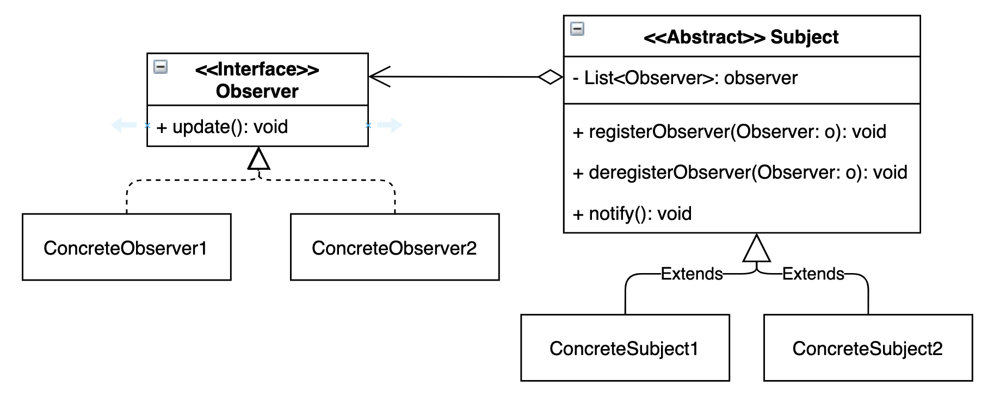
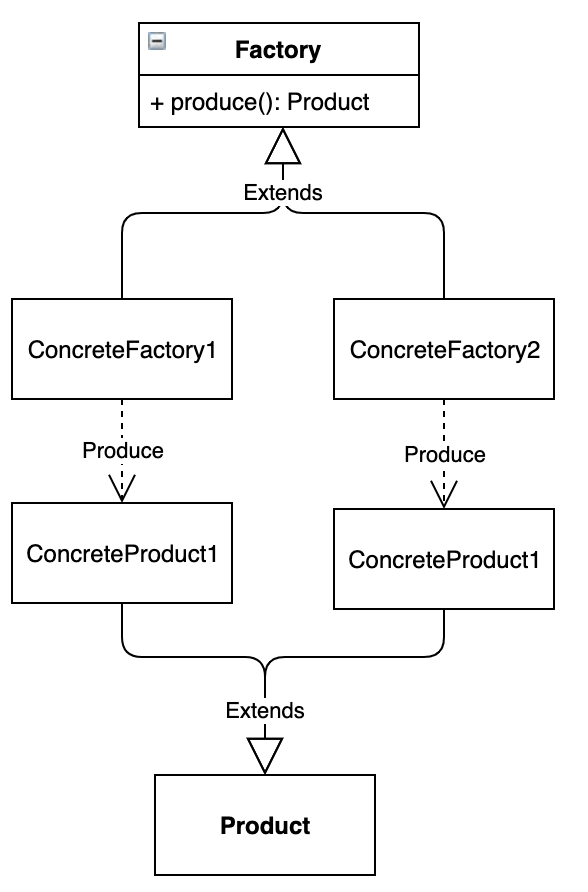

Design Patterns in One Image and One Sentence, and Alterability
Composite Pattern
What it is
Treat parts and wholes in the same way.
Alterability
- To add a new kind of leaf class
L:Lis new code not counted in C; one class will be changed to construct fromL-> C = L. - To add a new composite class
Cm: same.
Related Principles
- Open-Closed Principle
- Dependency Inversion: depend on the abstract component
Command Pattern
What it is
Pack some code to be executed into an object, so that the code can be executed at another class/time.

Typical examples
- GUI action implementations: Action listener (Attaching a piece of code to a button by adding an event listener. Executed when someone clicks the button).
- Delaying command executing
- Record commands: “undo”
- Change location of command execution: have another computer execute the command (call the
execute()method of the object.

This is both Composite pattern and Command pattern.
Alterability
Adding the new command does not add on to C.
- Adding a new possible behaviour of the receiver:
- Add a new method to the Receiver
- Use the new command in the client
- C = 2
- Add a new command that calls existing receiver behaviours:
- Use the new command in the client
- C = 1
Dependency Injection
What it is
Separates the use of service objects from the construction of service objects
Alterability
Add a new concrete service: C = 1 (Injector)
Related Principles
- Dependency Inversion: Depend on Abstraction
- Open-closed principle: abstract entities whose behaviour is extended by the concrete services supplied to it.
Strategy Pattern
What it is
Define a family of algorithms, encapsulate each one, and make them
interchangeable.
Relatable with Dependency Injection ⬆️
Alterability
- Adding a new strategy: C=1 (context change)
- Using a different strategy: C=1 (context change)
Observer Pattern
What it is
When one object (publisher) changes state, all its dependents (subscriber) are notified and updated automatically
Alterability
- Adding a new concrete observer: C=1 (class doing the registration)
- Adding a new concrete subject: C=1 (class using the subject)
Decorator Pattern
What it is
Extend functionality by subclassing
Factory Method
What it is
Let subclassed factories decide which class to instantiate.
Template Method
Let subclasses redefine certain steps of an algorithm without changing the algorithm’s structure
MVC and Design Patterns
- Observer pattern
- UI components need to show the state of the system, and get updated when state changes
- Composite pattern
- Some UI components are supposed to behave the same way as their parents/the whole user interface
- Decorator pattern
- Some UI components must be associated with another element, and modifies some aspects of the element
- Strategy pattern
- Some UI elements provide a way for the user to interact with the UI
- Exactly how a user performs a specific action may differ
- Factory method
- The exact action/behaviour of some elements may change for different users
- Decision deferred and constructed through a template method
MVC Alterability
MVC allows a number of change cases to be implemented with only the minimum number of existing classes needing to change (C). Let’s examine four change cases:
- Adding new functionality
- New classes, usually not by changing existing classes
- Change what state of the system has to be shown
- Change the model (if needed)
- Change ONLY the view affected (possibly only adding new view component class)
- No change on controllers
- Change how the state of the system is shown
- Change the relevant view class(s)
- No need to change model
- No need to change controller
- Change how the user performs actions in the system
- Change (or add) only the relevant controllers
- Usually no need to change any controllers
JUnit and Design Patterns
- Composite pattern
Testis the Component,TestSuiteis the Composite, andTestCaseis the leaf.
- Command pattern
TestCaseis the command- Command relies on a single method to invoke it. Here it is
TestCase.run(). - This simple interface allows us to invoke different implementations of a command through the same interface.
- Template Method
runis the template method,setUp,runTestandtearDownare the hook methods.
- Adapter pattern
- Make all the test cases look the same from the point of view of the invoker of the test.
- Convert the interface of a class into another interface clients expect.
- Collecting Parameter
- We only want to record the failures, and get a highly condensed summary of the successes.
1
2
3
4
5
6
7
8
9
10
11
12
13
14
15
16
17
18
19
20
21
22
23
24
25
26public class TestResult extends Object {
protected int fRunTests;
public TestResult() {
fRunTests= 0;
}
public synchronized void startTest(Test test) {
fRunTests++;
}
}
public class TestCase {
public void run(TestResult result) {
result.startTest(this);
setUp();
runTest();
tearDown();
}
public TestResult run() {
TestResult result= createResult();
run(result);
return result;
}
protected TestResult createResult() {
return new TestResult();
}
}
- We only want to record the failures, and get a highly condensed summary of the successes.
See JUnit A Cook’s Tour for more details.